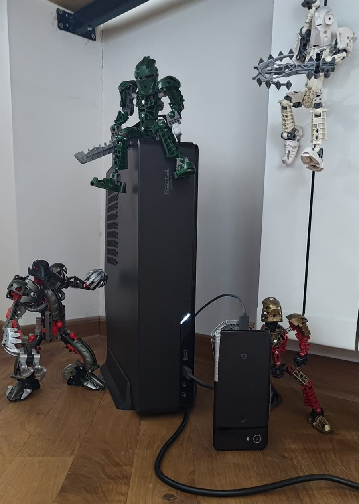

AI genuinely does make us more productive. But the part I find more interesting sits underneath that: we can now live in something close to an ideal arrangement, where the information we can't possibly hold in our own heads stays available to our models, assembled as context whenever it's needed.
Modern language models have a context window big enough to take a great deal of it. So the bottleneck moved. It isn't the model any more — it's whether the material exists at all, whether it's still true, and whether the model can actually reach it.
That's why, when I work with AI and with agents, I follow three rules. They're numbered because they're a chain, not a menu: each one is wasted without the one before it.
01 — Collect
Gather more context than feels reasonable
Four things go into the vault. Specs — what I'm building and why, written before the code. Meetings — every call recorded and transcribed. Voice notes — I talk while walking, it lands as text. Decisions — not only what I picked, but what I turned down and why.
That last one is the category a model can never rebuild by reading the repository. Code shows the decision that survived; notes show the ones that didn't, which is usually the question being asked.
It's plain markdown in a git repository. No database, no service, nothing to migrate off — which is the only reason it has survived long enough to be useful.
vault/
├── CLAUDE.md rules for the agent
├── agency/ clients and briefs
├── products/ side projects
├── work/ day job
├── learning/ notes by subject
├── personal/ planning, health
├── finance/ monthly reports
├── tasks/
│ ├── weekly/ three outcomes max
│ └── monthly/ goals and retro
└── templates/ shapes for new notes
Boring on purpose. Every client and every product gets one folder holding its spec, its decisions and its call transcripts — the agent finds things by reading, not by clever structure.
02 — Curate
Context rots, so schedule the cleaning
Models generate quickly. Let everything they write land in your notes and within a month you own a well-formatted archive of confident nonsense. Once a week I delete what's dead and fact-check what's new — models are good at catching a claim with nothing behind it.
The part that actually holds isn't discipline, it's a file. The conventions at the vault root tell the agent where notes go, how tasks are written, and what never to add. Curation is a config, not a mood.
03 — Reach
Context you can't reach is context you don't have
A server sits in my apartment with no public address, behind NAT like everyone's. A small rented VPS is the meeting point: the server holds a tunnel to it, my phone holds a tunnel to it, and my phone lands inside my home network. The VPS computes nothing.
After that it's just ssh. The session on the server doesn't die when I shut the laptop — I attach to the same screen from the street, and the agent has been working the whole way.
The setup
How the phone gets home
Three hops. The middle one is rented and does no work at all — that's the whole trick.
Both peers dial out to the VPS, so neither needs an open port. Once the tunnel is up my phone is on the same network as my living room, and everything after that is ordinary ssh into a session that was already running.
The hardware
The server is a tower on the floor
No rack, no datacenter, no provider. It stands in the corner of my apartment, and this is honestly what it looks like.

In the frame: the tower itself, a Pixel 3a propped against it on a USB cable, and four Bionicles holding the perimeter. Nothing in this picture is staged, including the Bionicles.
CPU — AMD Ryzen 5 3600, 6 cores / 12 threads
Memory — 32 GB
GPU — NVIDIA GTX 1660, 6 GB
Storage — 120 GB system SSD, plus a 1 TB drive for data
OS — Ubuntu 24.04 LTS
Six gigabytes of video memory is the real constraint here, and it decides more than anything else on this page: one model is warm at a time, so speech-to-text and the language model take turns rather than sharing the card. Everything in the setup is shaped around that limit.
The phone in the photo is not the one I demo from. That one is an old Pixel 3a, wired to the server over USB and driven with adb — a phone agent. The phone is the hands, the server is the head. It exists to reach the things that have no API: notifications, and apps that never exposed a public interface.
What it buys
The agent is in the chat
A working chat is where requirements actually arrive — so that's where the agent should be.
Through an MCP server, my agent reads and writes Telegram. It sits in the chats with the people I build for. They report what's broken in their own words: no ticket, no repro steps, no screenshot.
I don't forward that message to the model. A complaint isn't a task — somebody has to decide what's actually broken, what to touch and what to leave alone. That stays my job. What the agent receives is the decision, and it reads the chat, the repository and the notes on its own. I never describe the project.
Then it's a push to staging, a few minutes of CI, and a rule I don't bend: production waits for a human to say yes.
Driving a real browser for checks and screenshots.
by Microsoft
On that Telegram server: I run it, I didn't write it. I did hit a wall — it couldn't post media into forum topics — so I added reply_to to send_file and send_album, wrote the tests, and sent it upstream as PR #174. That's the honest shape of this setup: you end up fixing the tools you depend on.
Reference
Skills
A skill is a folder of instructions the agent loads when a task matches it — a repeated job that stops being re-explained every time. These are the open ones I run.
Self-hosted, OpenAI-compatible gateway. Turns one machine into a local provider of LLM chat, speech-to-text and text-to-speech — projects point at one base URL instead of a vendor. This is what transcribes my meetings.
The models can already hold more than I can. The bottleneck moved: does the material exist, is it still true, and can the model reach it.
01 — Collect
Gather more context than feels reasonable
Specs. Meeting transcripts. Voice notes. Decisions — including the ones I turned down.
Plain markdown in a git repository
vault/
├── CLAUDE.md rules for the agent
├── agency/ clients and briefs
├── products/ side projects
├── work/ day job
├── learning/ notes by subject
├── personal/ planning, health
├── finance/ monthly reports
├── tasks/
│ ├── weekly/ three outcomes max
│ └── monthly/ goals and retro
└── templates/ shapes for new notes
01 — Collect · how it lands
Meetings, voice notes — transcribed on my own GPU
Specs, decisions — written straight in
The vault — markdown in git
Weekly pass — delete what's dead, fact-check what's new
Agents — read all of it
02 — Curate
Context rots
Delete what's dead, fact-check what's new. The conventions live in a file, not in my head.
03 — Reach
Context you can't reach is context you don't have
Phone, tunnel, the tower in my flat. After that it's just ssh — and the session never died.
03 — Reach · the setup
Phone
Termux · ssh
WireGuard · dials out
VPS
rented · computes nothing · just a meeting point
WireGuard · dials out
Home server
behind NAT · tmux · agents · repos
Neither side needs an open port. After that it is just ssh.
The hardware
A tower on the floor
CPU — Ryzen 5 3600
GPU — GTX 1660, 6 GB
Memory — 32 GB
Phone — Pixel 3a on USB, driven by adb
What it buys
The agent is in the chat
A complaint is not a task. Deciding what's broken stays my job — what the agent gets is the decision.